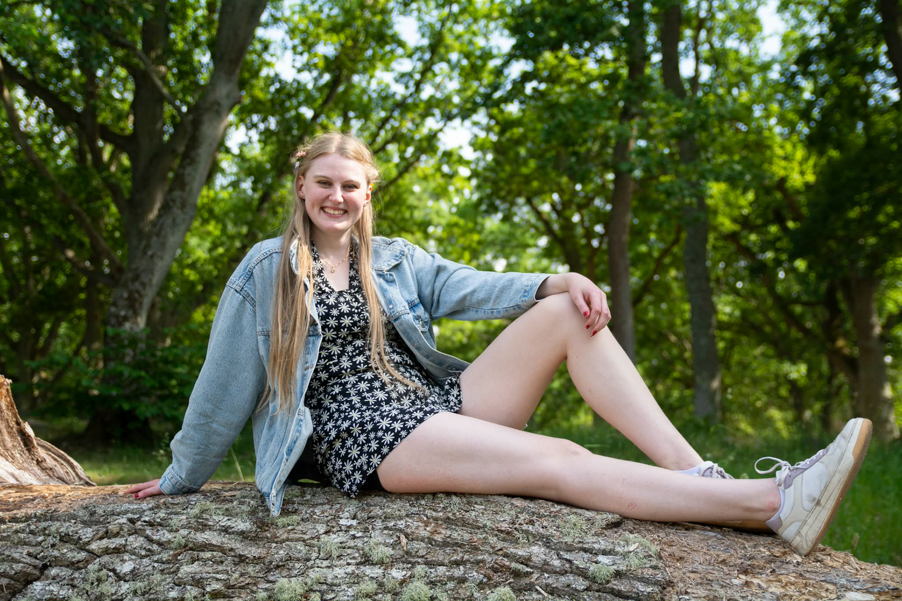

I’m a UX designer based in Kalmar, Sweden, with a background in visual communication and a foundation in acting for film from New York Film Academy in Los Angeles.
My path into UX comes from a long-standing interest in creativity and storytelling, combined with a desire to create solutions that genuinely help people. I’ve always been drawn to thinking outside the box and using creativity in meaningful ways.
I’ve studied Visual Communication + Change at Linnaeus University and am currently specializing in UX design, where I focus on turning research into clear, structured, and engaging digital experiences.

Beyond design, I have a strong interest in acting and have acted in stage productions and interactive performances. This experience has shaped how I think about communication, empathy, and understanding different perspectives, skills I actively bring into my design process.


I’m particularly interested in creating accessible and intuitive solutions that make it easier for people to navigate digital services, regardless of their background or abilities.